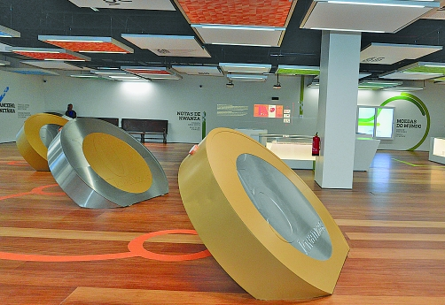
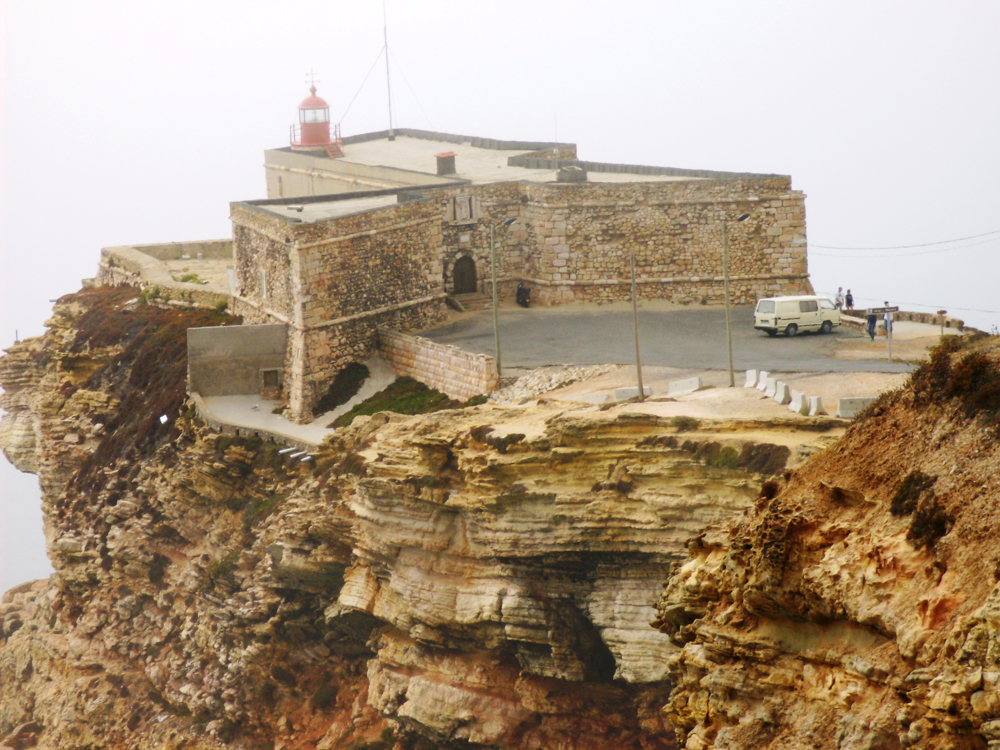
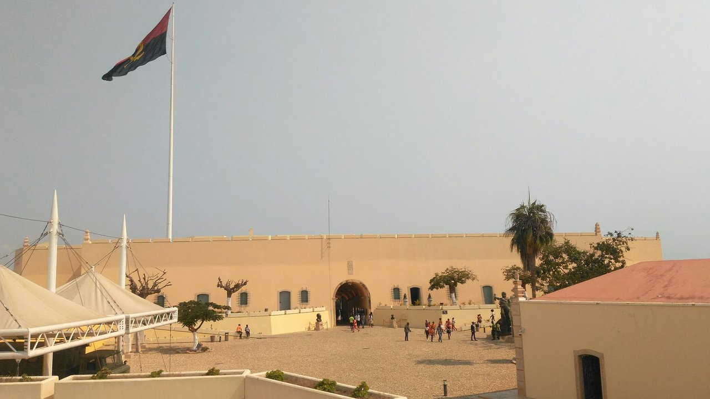

| Cidade | Monumentos | Clube | Voltar ao portifólio |
O Museu da Moeda apresenta a história do dinheiro desde o Zimbo até ao Kwanza. Único na sua vocação, este museu expõe as colecções de numismática e de notafilia do Banco Nacional de Angola, há à disposição alguns objectos de enquadramento e dispositivos audiovisuais que ilucidam melhor os visitantes sobre o nosso passado. Este breve roteiro tem o propósito de fundamentar a interpretação dos temas que constituem a narrativa do museu. A museografia assenta em núcleos temáticos que focam os pré-monetários e outros meios de pagamento, histórias de moedas singulares, a iconografia do dinheiro, a evolução da banca, ilustrações de notas, os elementos de segurança e testemunhos pessoais sobre o papel do dinheiro na vida do cidadão angolano.
Falar da trajectória do Kwanza é uma autêntica viagem no tempo, com importantes e obrigatórias paragens. Começamos no Nzimbu, pequena concha ou búzio, extraído das praias da Ilha de Luanda. Na sua maioria eram apanhados principalmente por mulheres, sendo que os de cor cinzenta eram considerados de maior valor. Chegamos ao Libongo, pequeno pedaço de tecido de várias dimensões e qualidades, feito à base de fibras da palmeira-bordão. O Sal também foi uma das nossas moedas. Este bem proveniente das minas ou salinas da Quiçama, era moldado em peças de diversas formas como pedras e barras. Estamos no final século XVI, onde se começa a usar o Marfim. Este novo meio de pagamento revela-se a principal fonte de receita do comércio com o exterior. Findo este período, surge o Cobre. Esta moeda de troca, tornou-se numa referência nas transacções comerciais, sendo o metal mais usado para fabricação de utensílios de uso diário como facas, enxadas, flechas, punhais, copos, manilhas, colares e fios.

Aproximamo-nos do Cauri, um pouco antes da nossa viagem terminar, apresentando-se como concha branca de rara beleza, que se afirma durante muitos séculos como a moeda corrente em várias regiões do mundo. Por último, as Contas, objectos ornamentais feitos de sementes, de raízes aromáticas, cilindros, de marfim, pedaços de ossos, dentes, unhas e outros adornos. É por tudo isto, e muito mais, que a História da nossa Moeda é considerada rica. Venha conhecer o nosso Museu da Moeda, baluarte da nossa História.
A Fortaleza de São Miguel de Luanda com ordem militar localiza-se no antigo monte de São Paulo, actualmente denominado de Morro da Fortaleza, nas proximidades da ponte da Ilha de Luanda, em Angola. Foi a primeira fortificação a ser erguida em Luanda, no século XVI, durante o governo de Paulo Dias de Novais, primeiramente construída em barro. Esse material será depois substituído em 1638 por taipa e adobe, com obras acabadas em 1689 sob a direcção de D. João de Lencastre. Nessa época apresentava a forma de uma estrela com quatro pontas, com o sistema abaluartado, segundo os métodos italianos mais atualizados da época, sobretudo os do mestre Benedetto da Ravenna.

Depois da ocupação holandesa, começou a ser construída em alvenaria em 1705 a mando do governador D. Lourenço de Almada, fazendo parte das obras obrigatórias dos sucessivos governadores. Finalmente, no governo de D. Francisco de Sousa Coutinho (1764–1772), as obras terminam, com a construção de uma bateria do cavaleiro, armazéns à prova de bomba e uma cisterna que ficou conhecida como Cova da Onça, seguindo o estilo barroco militar, na base da ambiguidade, pluralidade e descentramento.

Os muros foram-se consolidando em pedra e cal em diferentes épocas, concluindo-se já no século XX. Ficava assim engenharia militar de Angola. Do ponto de vista urbano, a fortaleza foi sempre um marco ordenador do espaço da cidade. Nos primeiros tempos, foi o limite do aglomerado que se desenvolvia para sudoeste, em direção à Praia do Bispo. Mais tarde, cerca de 1648, quando a Barra da Corimba ficou assoreada, a cidade passou a desenvolver-se para o lado norte, do outro lado do morro, mantendo desta forma o seu papel ordenador. Actualmente encontra-se instalado na fortaleza o Museu Nacional de História Militar.
O Palácio de Ferro é um edifício histórico de Luanda, em Angola, que se crê ser da autoria de Gustave Eiffel. Porém, 2015 a Embaixada de França em Angola classificou o Palácio de Ferro como uma obra de autoria de Gustave Eiffel.
O edifício possuiu uma original decoração em filigrana metálica e tem um soberbo avarandado envolvente, sendo sem sombra de duvida, o melhor exemplar da arquitectura do ferro em Angola
A história do edifício está envolta em mistério, já que não existem registos da sua origem. Acredita-se que a estrutura em ferro forjado tenha sido construída na década de 1880 ou 90 em França, como pavilhão para uma exposição, e posteriormente desmontado e transportado de barco com destino provável a Madagáscar.
Existe alguma especulação sob a forma como chegou a Angola. Segundo algumas fontes, o navio que o transportava acabou por ser desviado da sua rota pela Corrente de Benguela, naufragando perto da Costa dos Esqueletos em território angolano. Outras fontes indicam que o mesmo acabou por ser desembarcado em Luanda e vendido em hasta pública, tendo sido arrematado pela Companhia Comercial de Angola que, de facto, adquiriu o Palácio de ferro nos finais do século XIX / princípios do século XX. A Companhia Comercial de Angola - CCA - era a maior empresa comercial de Africa em finais do seculo XIX, principios do seculo XX, e pertencia a três grandes capitalistas da época : António de Sousa Lara, João Ferreira Gonçalves (Ferreira Marques & Fonseca) e Bensaude.